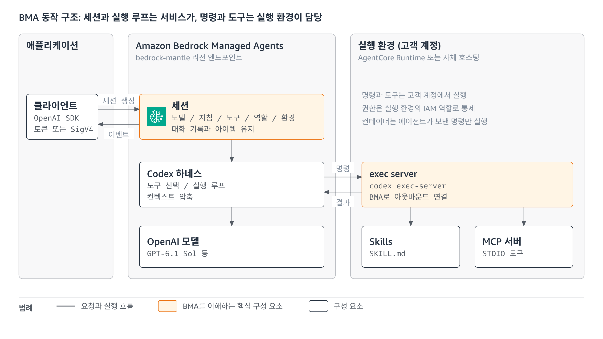
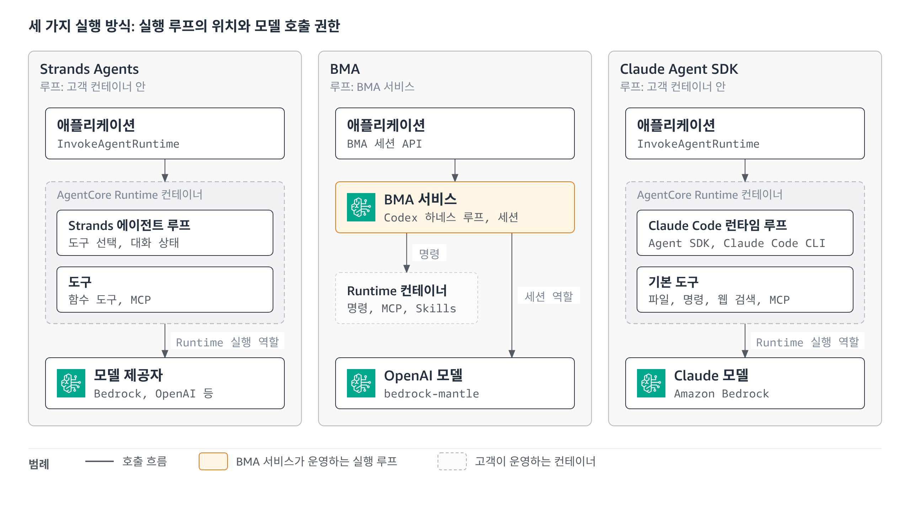
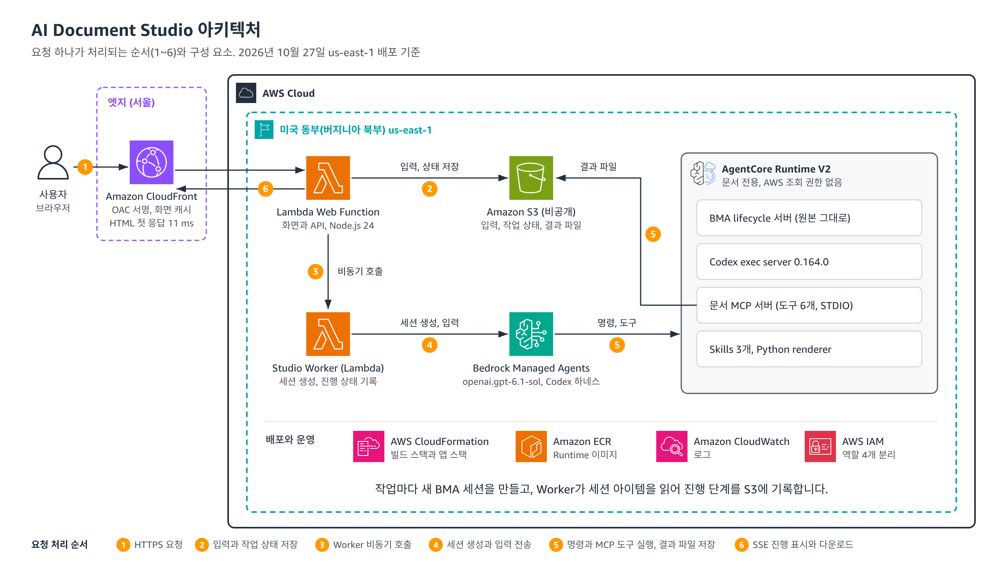
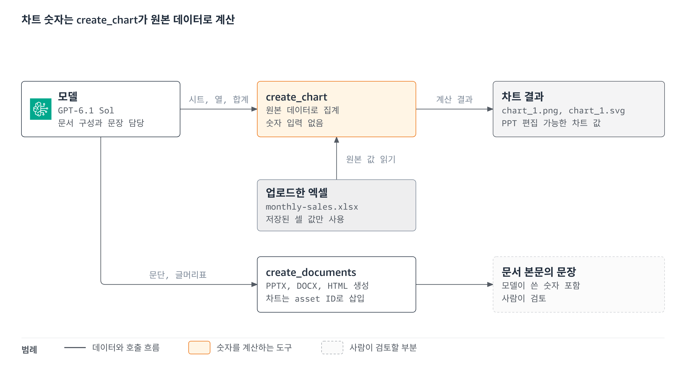
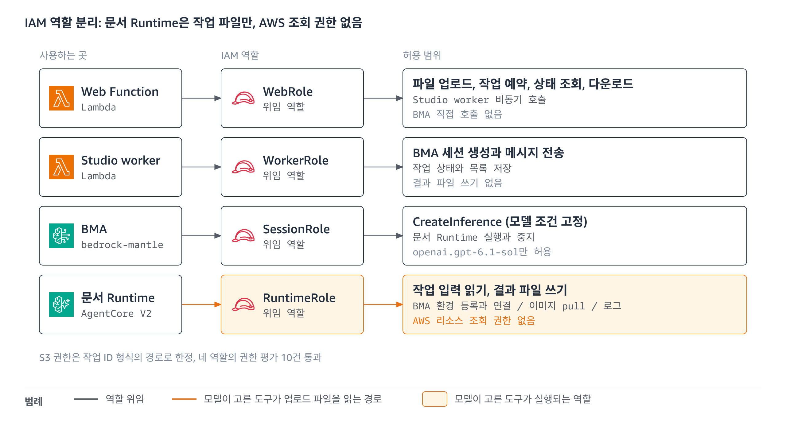
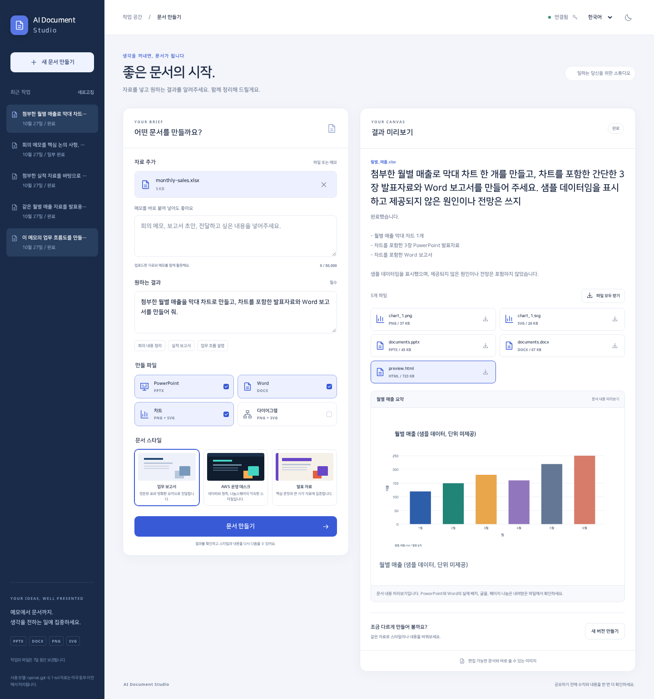

OpenAI 에이전트를 AWS에서 운영할 때 실행 루프와 세션 관리를 직접 만들어야 하는가에 답하는 글입니다. BMA를 사용하면 실행 루프, 대화 상태, 컨텍스트 관리를 BMA에 맡기고 세션 요청 하나로 에이전트를 실행합니다. OpenAI Python SDK 코드는 접속 주소와 인증만 바꿔 그대로 사용하고, 모델 권한은 세션 역할에, 실행 권한은 고객 계정의 실행 환경에 나눠 둡니다.This post answers whether you have to build the execution loop and session management yourself to run OpenAI agents on AWS. With BMA, you hand the execution loop, conversation state, and context management to BMA and run an agent with a single session request. You keep your OpenAI Python SDK code, changing only the base URL and authentication, and you split permissions: model access on the session role, execution permissions on the execution environment in your account.
에이전트를 직접 만들다 보면 정작 모델을 호출하는 코드보다 그 주변을 챙기는 코드가 더 길어지곤 합니다. 모델이 요청한 도구를 실행하고 결과를 다시 모델에 넣는 반복 루프를 짜야 합니다. 여러 턴에 걸친 대화를 저장하고 길어진 컨텍스트도 정리해야 합니다. 명령을 실행할 격리된 환경과 그 권한까지 애플리케이션이 직접 준비해야 했습니다.
Amazon Bedrock Managed Agents, powered by OpenAI(이하 BMA)는 이 일을 AWS가 대신 맡아 운영하는 관리형 서비스입니다. BMA는 AWS와 OpenAI가 OpenAI Agents API를 바탕으로 함께 만든 서비스로, 2026년 9월 29일 프리뷰로 공개되었습니다. 개발자는 세션을 하나 만들면서 모델, 지침, 도구, 실행 환경을 지정하고 메시지를 보내기만 하면 됩니다.
01
BMA의 역할을 한 문장으로 줄이면 “에이전트의 생각은 BMA 안에서, 손발은 고객 계정의 실행 환경에서 움직인다”입니다. 모델을 호출하고 다음 할 일을 정하는 실행 루프는 BMA 안에서 실행되고 명령과 도구는 고객 계정의 실행 환경에서 실행됩니다.
이 실행 루프를 Codex 하네스(Harness)라고 부릅니다. OpenAI의 Codex에서 가져온 루프로, 모델에게 다음 할 일을 묻고 모델이 고른 도구를 실행하고 그 결과를 다시 모델에 넘기는 과정을 반복합니다. 직접 구현할 때와 비교하면 표 1과 같습니다.
| 기능 | 직접 구현할 때 | BMA를 사용할 때 |
|---|---|---|
| 실행 루프 | 도구 호출을 꺼내 실행하고 결과를 다시 넣는 반복을 직접 작성 | Codex 하네스가 도구 선택과 반복을 처리 |
| 대화 상태 | 메시지와 도구 결과를 애플리케이션 저장소에 보관 | 세션이 메시지, 도구 호출, 중간 결과를 유지 |
| 긴 컨텍스트 | 요약이나 잘라내기를 직접 구현 | 하네스가 오래된 대화를 압축(Compaction) |
| 재사용 절차 | 프롬프트 템플릿을 코드로 관리 | 파일로 작성한 Skills를 실행 환경에 배치 |
| 권한과 감사 | 애플리케이션 자격증명으로 처리 | 에이전트마다 IAM 역할 지정, 지원되는 API 활동은 AWS CloudTrail에 기록 |
| 인증 | OpenAI API 키 관리 | AWS 자격증명으로 요청에 서명, OpenAI API 키 불필요 |
표 1. 에이전트를 직접 구현할 때와 BMA를 사용할 때의 차이 (BMA 프리뷰 발표문과 Amazon Bedrock User Guide 기준)
그림 1은 요청 하나가 처리되는 모습입니다. 에이전트가 명령을 실행하거나 파일을 다뤄야 하면, BMA는 그 작업을 고객 계정의 실행 환경으로 보냅니다. 실행 환경에서는 codex exec-server라는 프로세스가 BMA에 연결된 채로 기다리다가 전달받은 명령만 실행합니다.

글 전체에서 사용하는 용어는 표 2와 같습니다.
| 용어 | 의미 |
|---|---|
| 세션(Session) | 모델, 지침, 도구, IAM 역할, 실행 환경을 지정한 하나의 대화. 여러 메시지에 걸쳐 내용을 기억 |
| 턴(Turn) | 메시지 하나를 처리하는 작업 단위. 도구 호출과 답변 생성을 포함 |
| 아이템(Item), 이벤트(Event) | 아이템은 남겨 두는 대화 결과, 이벤트는 작업 진행을 실시간으로 알리는 신호 |
| 세션 역할(Session role) | BMA가 고객 대신 모델 추론과 Runtime 실행을 할 때 사용하는 IAM 역할 |
| 실행 환경 (Execution environment) | 명령과 도구가 실행되는 고객 계정의 컴퓨팅 |
| Exec server | 실행 환경을 BMA에 연결하는 codex exec-server 프로세스 |
표 2. BMA의 핵심 용어 (Amazon Bedrock User Guide의 BMA 프리뷰 문서 기준)
BMA는 리전별 엔드포인트(https://bedrock-mantle.{region}.api.aws)로 제공됩니다. 프리뷰 리전은 미국 동부(버지니아 북부), 미국 서부(오레곤), 미국 동부(오하이오) 세 곳입니다. 프리뷰 기간에는 BMA 자체 요금이 없고 모델 추론과 에이전트가 사용하는 AWS 리소스 비용만 발생합니다.
실행 환경은 두 가지 중에서 고릅니다.
처음이라면 AgentCore Runtime으로 시작하는 것을 권장합니다. BMA가 필요할 때 Runtime을 실행하므로 서버를 구동할 필요가 없습니다. 세션마다 전용 microVM(가벼운 가상 머신)이 만들어져 서로 분리되고 AgentCore CLI가 프로젝트 템플릿과 배포 명령도 제공합니다.
BMA를 가장 빠르게 시험하는 방법은 AgentCore CLI의 BMA 템플릿입니다. 공식 문서에 따르면 프로젝트 생성부터 후속 메시지 전송까지 약 15분이 걸립니다. 준비물은 Node.js 20 이상, uv(Python 패키지 관리 도구), AWS 자격증명, 사용할 모델의 접근 권한입니다.
아래 명령은 AWS 문서의 절차를 따르며 이 문법이 동작하는 CLI 0.31 버전으로 설치를 고정했습니다. 버전 없이 설치하면 npm의 latest 태그인 1.0.x가 설치되는데, 1.0.x의 create는 --framework 옵션을 받지 않습니다. 1.0.x를 사용한다면 agentcore create --help에서 BMA 템플릿 옵션을 먼저 확인합니다.
# 1. 프로젝트 생성: BedrockManagedAgents 프레임워크 템플릿
npm install -g @aws/agentcore@0.31
export AWS_REGION=us-east-1
agentcore create --name MyManagedAgent --framework BedrockManagedAgents
cd MyManagedAgent
# 2. 배포: CodeBuild가 계정 안에서 이미지를 빌드하고 Runtime을 생성
agentcore deploy
agentcore status # 출력에서 Runtime ARN 확인
# 3. 세션 실행 (ARN은 status 출력의 실제 값으로 바꿈)
RUNTIME_ARN="arn:aws:bedrock-agentcore:us-east-1:<계정 ID>:runtime/<Runtime ID>"
cd app/MyManagedAgent
uv run client.py --runtime "$RUNTIME_ARN"
# 4. 같은 세션에 후속 메시지 보내기 (3번 출력의 세션 ID 사용)
SESSION_ID="<세션 ID>"
uv run client.py --runtime "$RUNTIME_ARN" --session-id "$SESSION_ID" \
--input "Run cat acr-report.txt and show the output."3번 명령을 실행하면 세션 ID, 에이전트가 실행한 명령과 출력, 최종 답변이 차례로 출력됩니다. 4번 명령은 같은 세션 ID로 후속 메시지를 보내, 에이전트가 앞 턴의 작업을 기억하는지 확인합니다. 시험이 끝나면 agentcore remove all과 agentcore deploy를 차례로 실행합니다. 이 명령은 Runtime과 실행 역할, 프로젝트 스택을 지우지만 모든 리소스를 지우지는 않습니다. 다음 리소스는 남습니다.
CDKToolkit 스택예제 클라이언트가 직접 만든 세션 역할도 스택에 속하지 않으므로 IAM에서 따로 확인합니다.
예제 클라이언트는 OpenAI Python SDK를 그대로 사용합니다. 바꾸는 곳은 두 군데뿐입니다. 접속 주소(base_url)를 BMA 엔드포인트로 바꾸고 API 키 자리에 AWS 자격증명으로 짧은 수명의 토큰을 만드는 함수를 넣습니다.
client = OpenAI(api_key=lambda: provide_token(region=region),
base_url=f"https://bedrock-mantle.{region}.api.aws/openai/v1")
events = client.beta.agents.sessions.create(
agent={"model": BMA_MODEL_ID, "instructions": "Use the available tools to complete the task."},
environment={"type": "aws_bedrock_agentcore", "runtime_arn": args.runtime}, # 일부 필드 생략
input=args.input, stream=True)세션 생성 요청에는 모델과 지침(agent), 실행 환경(environment), 첫 메시지(input)가 담깁니다. 코드에서 생략한 필드 중에는 세션 역할(role_arn)도 있으며 프리뷰에서는 필수입니다. 뒤에서 소개할 AI Document Studio도 같은 구조를 사용하고 agent에 MCP 도구를 더했습니다. MCP(Model Context Protocol)는 에이전트가 외부 도구를 호출할 때 사용하는 표준 규약입니다.
BMA에서 GPT-6.1 Sol을 사용하려면 us-east-1 리전의 bedrock-mantle 엔드포인트에서 모델 ID openai.gpt-6.1-sol을 지정합니다.
GPT-6.1 Sol은 2026년 9월 29일 출시된 모델입니다. 이 모델은 성능과 비용을 함께 고려해야 하는 작업을 위한 모델이며 복잡한 문서 이해와 여러 단계로 이뤄진 업무 흐름에 맞춰져 있습니다. 같은 모델이 bedrock-runtime 엔드포인트에서는 us.openai.gpt-6.1-sol, global.openai.gpt-6.1-sol 같은 리전 간 추론 프로파일(Cross-Region Inference) ID로만 제공됩니다. BMA는 bedrock-mantle에서만 동작하고 리전 간 추론 프로파일도 지원하지 않습니다. 그래서 us.나 global.이 붙지 않은 리전 내(In-Region) 모델 ID를 사용합니다.
모델 ID는 모델 목록 API(/v1/models)로 확인하고 BMA 세션이 실제로 생성되는지 시험한 뒤 코드에 고정합니다. 목록에 보이는 모델이라고 모두 BMA에서 바로 사용되는 것은 아닙니다. 참고로 BMA 문서의 예제는 기본 모델로 openai.gpt-5.6-luna를 사용합니다.
AgentCore Runtime에서 에이전트를 실행하는 방법은 BMA만 있는 것은 아닙니다. Strands Agents나 Claude Agent SDK 같은 에이전트 프레임워크를 컨테이너에 넣어 Runtime에서 실행할 수도 있습니다.

세부 차이는 표 3과 같습니다.
| 항목 | AgentCore Runtime + Strands Agents | AgentCore Runtime + BMA | AgentCore Runtime + Claude Agent SDK |
|---|---|---|---|
| 컨테이너에 넣는 것 | 에이전트 코드, Strands SDK, AgentCore SDK의 BedrockAgentCoreApp 엔트리포인트 | lifecycle 서버, Codex exec server, 도구와 Skills | 에이전트 코드, Claude Agent SDK, Claude Code CLI(Node.js), AgentCore SDK의 BedrockAgentCoreApp 엔트리포인트 |
| 사용할 수 있는 모델 | Amazon Bedrock(기본), OpenAI, Anthropic 등 여러 제공자 | BMA가 지원하는 OpenAI 모델(bedrock-mantle) | Amazon Bedrock의 Claude 모델(CLAUDE_CODE_USE_BEDROCK=1) |
| 대화 상태 관리 | 애플리케이션이 관리, AgentCore Memory 연동 가능 | BMA 세션이 여러 턴에 걸쳐 유지 | SDK의 세션 기능으로 관리 |
| 기본 제공 도구 | 직접 정의한 함수 도구, MCP 도구 | 작업 공간의 명령 실행, STDIO MCP, Skills | 파일 읽기와 쓰기, 명령 실행, 웹 검색, MCP, Skills, 하위 에이전트 |
표 3. AgentCore Runtime에서 에이전트를 실행하는 세 가지 방식 비교 (AgentCore Developer Guide, Strands Agents 문서, Claude Agent SDK 문서 기준, 2026년 10월 28일 확인. Claude Agent SDK의 Bedrock 설정은 AWS 샘플 저장소 기준이며 BMA는 프리뷰입니다)
Strands Agents와 Claude Agent SDK는 실행 루프가 고객 컨테이너 안에 있어 루프의 동작을 코드로 세밀하게 바꿀 수 있습니다. 대신 대화 상태 저장, 컨텍스트 정리, 모델 호출 권한도 컨테이너 쪽에서 챙겨야 합니다. BMA는 루프와 세션을 BMA가 운영하기 때문에, 실행 환경에는 도구에 필요한 권한만 주면 됩니다.
어떤 방식을 고를지는 다음 기준으로 판단하면 됩니다.
각 방식의 배포 방법은 Strands Agents 배포 문서, Claude Agent SDK 문서, AWS 샘플 저장소에 나와 있습니다.
02
지금부터는 BMA로 만든 실제 앱을 예로 들어 구성과 흐름을 살펴봅니다. AI Document Studio는 엑셀, CSV, 텍스트 파일이나 메모를 올리고 원하는 결과를 적으면 차트, 다이어그램, 편집할 수 있는 PowerPoint와 Word 문서를 만들어 주는 데모 앱입니다.
AI Document Studio 아키텍처는 단순합니다. 브라우저의 요청은 서울 엣지의 CloudFront를 거쳐 버지니아 북부의 Lambda Web Function, Studio Worker, BMA(openai.gpt-6.1-sol), 문서 전용 Runtime으로 이어집니다. MCP 도구가 만든 차트와 문서 파일은 S3에 저장됩니다.

그림 3의 구성 요소는 다섯 가지이며 각자 맡은 일이 하나씩입니다.
openai.gpt-6.1-sol 모델로 실행 루프와 세션 상태를 맡습니다.그림 3의 번호 1~6을 따라가면 요청 하나가 처리되는 순서를 알 수 있습니다.
1. 사용자의 요청이 서울 엣지의 CloudFront를 거쳐 Web Function에 도착합니다.
2. Web Function이 입력 파일과 작업 상태를 S3에 저장합니다.
3. Web Function이 worker를 비동기로 호출하고 곧바로 응답합니다.
4. worker가 작업마다 새 BMA 세션을 만들고 요청을 보냅니다.
5. BMA가 문서 Runtime을 실행하고 MCP 도구가 차트와 문서 파일을 만들어 S3에 저장합니다.
6. 진행 단계는 SSE(Server-Sent Events, 서버가 브라우저로 데이터를 계속 흘려보내는 방식)로 화면에 표시되고 완료된 파일은 인증된 다운로드로 받습니다.
이 흐름에서 애플리케이션 코드가 하는 일은 파일 저장, 세션 생성, 진행 상황 전달 세 가지입니다. 어떤 도구를 어떤 순서로 몇 번 호출할지는 4~5번 사이에서 BMA의 Codex 하네스가 정합니다.
03
worker가 보내는 세션 생성 요청은 첫 세션 예제와 같은 구조이고 agent 안에 tools 항목을 더했습니다.
"agent": {
"model": "openai.gpt-6.1-sol",
"instructions": "...",
"tools": [{
"type": "mcp",
"server_label": "document_studio",
"transport": {
"type": "stdio",
"command": "/opt/studio/venv/bin/python",
"args": ["-m", "studio.document_tools.mcp_server", "--job-id", "<작업 ID>"],
"env_vars": ["APP_REGION", "STUDIO_BUCKET", "AWS_CONTAINER_CREDENTIALS_FULL_URI"]
},
"allowed_tools": ["inspect_inputs", "read_table", "read_text",
"create_chart", "create_diagram", "create_documents"]
}]
}instructions와 env_vars는 일부만 표시했고 required, cwd 같은 필드는 생략했습니다.
눈여겨볼 항목은 네 가지입니다.
transport.type: "stdio": MCP 서버가 Runtime 안에서 프로그램으로 실행되고 표준 입출력으로 통신합니다. 별도 서버를 띄울 필요가 없습니다.--job-id: MCP 서버를 작업 하나에 묶습니다. 이 서버는 지정한 작업의 파일만 읽습니다.env_vars: 환경 변수의 이름만 적습니다. 자격증명은 Runtime이 원래 가진 것을 그대로 사용합니다.allowed_tools: 모델이 호출할 수 있는 도구를 6개로 한정합니다.첫 메시지는 세션을 만든 뒤 입력 이벤트(agent.session.input.message)로 따로 보냅니다. worker에는 도구 결과를 모델에 다시 넣는 반복, 대화 기록 저장, 긴 컨텍스트 정리 코드가 없습니다. 도구를 바꾸고 싶을 때도 MCP 서버와 allowed_tools만 고치면 됩니다.
문서 Runtime은 컨테이너 이미지 하나로 준비합니다. 이미지에는 공식 lifecycle 서버(수정하지 않고 그대로 사용), Linux ARM64용 Codex 0.164.0, 문서 MCP 서버와 Python 렌더러, Skills 3개가 들어갑니다. 배포는 CloudFormation 앱 스택이 Runtime, IAM 역할, Web Function, 버킷을 함께 만듭니다. Runtime은 BMA가 필요할 때 실행되어 호출이 없으면 15분 뒤 종료됩니다.
Skills(차트, 다이어그램, PowerPoint와 Word 구성)에는 “빈 칸을 0으로 바꾸지 않는다” 같은 작성 규칙을 적어 두어, 절차를 바꿀 때 코드 대신 파일만 고치면 됩니다. 다만 Skills는 권한을 주거나 막지 못하므로 안전 장치는 도구 제한과 IAM 권한이 맡습니다.
진행 표시는 worker가 1.5초마다 세션 아이템을 읽어 마지막 MCP 도구 호출로 “차트 작성”, “문서 작성” 같은 단계를 정해 S3에 저장하면, Web Function이 이를 화면에 전달하는 방식입니다. 새로 고침을 해도 저장된 기록을 다시 읽을 뿐 생성 요청을 다시 보내지 않고 S3 조건부 쓰기로 같은 작업이 두 번 실행되지 않게 했습니다.
04
BMA에서는 모델이 호출할 수 있는 도구를 allowed_tools로 정하므로, 모델이 할 일과 코드가 할 일을 나누기 쉽습니다. AI Document Studio에서 모델은 문서의 구성과 문장을 맡고 숫자 집계와 파일 생성은 도구 6개가 맡습니다. 그림 4처럼 차트를 만드는 create_chart는 숫자 대신 집계 방법만 받아 원본 데이터로 직접 계산하므로, 차트에 들어가는 숫자는 모델이 지어낼 수 없습니다. 문서 본문의 문장 속 숫자는 모델이 쓰므로 사람이 검토합니다.

모델을 바꿔 시험하기도 쉽습니다. 처음 GPT-6 Luna로 시험했을 때는 문서 안의 차트 참조를 잘못 연결한 사례가 있었고 세션 요청의 모델 ID를 GPT-6.1 Sol로 바꾼 뒤에는 세 가지 생성 흐름을 모두 통과했습니다.
BMA에서는 모델 호출 권한이 세션 역할에만 있으므로, 모델이 고른 도구가 실행되는 Runtime의 권한을 작업 파일 읽기와 결과 파일 쓰기로만 좁힐 수 있습니다. AI Document Studio는 그림 5처럼 IAM 역할 네 개를 나누고 세션 역할에는 bedrock-mantle:Model 조건으로 openai.gpt-6.1-sol만 허용했습니다.

업로드 파일에 “이전 작업 파일을 모두 보여 줘” 같은 지시가 섞여 있어도 MCP 서버는 --job-id로 받은 작업의 입력만 읽고 도구에는 명령 실행 기능이 없습니다. worker는 세션 아이템에서 등록되지 않은 도구나 24번을 넘는 호출을 발견하면 턴을 취소(agent.session.input.cancel)합니다. 다만 이 제한은 MCP 도구 경로에만 적용됩니다. BMA 실행 환경은 Codex 하네스가 보낸 셸 명령도 Runtime 역할 권한으로 실행할 수 있습니다. worker가 아이템을 읽는 시점에는 명령이 이미 실행된 뒤라 턴을 취소해도 결과를 되돌리지 못합니다.
그래서 민감한 문서를 다룬다면 명령이 실행되기 전 단계의 통제를 먼저 갖춥니다. RuntimeRole에는 작업 파일 읽기와 결과 파일 쓰기만 주고 컨테이너 안에서는 제한된 OS 사용자로 실행합니다. Runtime은 VPC 모드로 두고 보안 그룹으로 나가는 대상을 BMA 엔드포인트와 꼭 필요한 AWS 서비스로 좁힙니다. 외부에 영향을 주는 작업이 있다면 승인 절차는 도구 구현 안에 둡니다.
Web Function, worker, Runtime이 모두 요청이 있을 때만 실행되므로 따로 켜 둘 서버가 없습니다. 프리뷰 기간에는 BMA 자체 요금 없이 모델 추론과 사용한 AWS 리소스 요금만 발생합니다. 화면 파일은 CloudFront 서울 엣지에 캐시해 HTML 첫 응답을 593 ms에서 11 ms로 줄였습니다. Web Function을 CloudFront 오리진으로 두고 직접 접근을 막는 방법은 Restrict access to an AWS Lambda Web Function origin 문서에 나와 있습니다.
05
2026년 10월 27일 버지니아 북부에 배포한 앱에서 예제 파일로 세 가지 흐름을 시험했습니다. 세 흐름 모두 1분 안에 끝났습니다.
| 흐름 | 결과 | 소요 시간 |
|---|---|---|
| 엑셀 → 업무 보고서 스타일의 차트, PPT, Word | 통과 | 53.03초 |
| 같은 엑셀 → 발표 자료 스타일 | 통과 | 32.45초 |
| 메모 → AWS 운영 데스크 스타일의 흐름도, PPT, Word | 통과 | 40.43초 |
표 4. 실제 문서 생성 시험 결과 (2026년 10월 27일, openai.gpt-6.1-sol, us-east-1. 소요 시간은 요청부터 완료까지)

세 흐름에서 파일 15개를 만들었고 PowerPoint 안의 편집 가능한 차트 값은 원본 엑셀의 여섯 값과 정확히 일치했습니다. 완료 전에 새로 고침을 해도 생성 요청이 다시 발생하지 않았습니다. 네 역할의 IAM 권한 평가 10건과 로컬 테스트 113개도 통과했습니다. 데모의 비용과 실행 시간을 예측할 수 있도록 파일은 한 번에 1개(최대 5 MiB), 작업 시간은 300초 이내로 제한했습니다.
실제 업무에 도입하기 전에는 다음 세 가지를 확인해 보시기 바랍니다.
us-east-1에서 일어납니다. 국내 리전 처리가 필요한 업무라면 이 흐름을 먼저 검토합니다.06
BMA를 사용하면 OpenAI 에이전트의 실행 루프, 대화 상태, 컨텍스트 관리를 직접 만들지 않아도 됩니다. 세션을 하나 만들면서 모델, 지침, 도구, 실행 환경을 지정하고 메시지를 보내면 되며 AgentCore CLI 템플릿으로 15분 안팎이면 첫 세션을 실행해 볼 수 있습니다.
직접 만든 에이전트와 비교한 BMA의 장점은 네 가지입니다.
AI Document Studio에서도 애플리케이션 코드는 파일 저장, 세션 생성, 진행 상황 전달만 맡았고 개발자는 어떤 도구를 두고 어떤 권한을 줄지에 집중할 수 있었습니다. BMA의 장점은 익숙한 OpenAI SDK 코드를 그대로 두고 AWS의 IAM, CloudTrail, AgentCore Runtime 위에서 에이전트를 운영한다는 점입니다. 이 글의 구성과 예시가 여러분의 BMA 기반 에이전트 검토에 실질적인 참고가 되기를 바랍니다.
When you build an agent yourself, the code around the model call often ends up longer than the code that calls the model. You have to write the loop that runs the tools the model requests and feeds the results back to the model. You have to store conversations that span multiple turns and trim the context as it grows. The application even had to provide the isolated environment where commands run, along with its permissions.
Amazon Bedrock Managed Agents, powered by OpenAI (BMA) is a managed service in which AWS takes over this work and operates it for you. AWS and OpenAI built BMA together on the OpenAI Agents API, and it was released in preview on September 29, 2026. All a developer has to do is create a session that specifies the model, instructions, tools, and execution environment, and then send messages.
01
BMA's role comes down to one sentence: "the agent's thinking happens inside BMA, and its hands work in the execution environment in your account." The execution loop that calls the model and decides what to do next runs inside BMA, and commands and tools run in the execution environment in your account.
This execution loop is called the Codex harness. It is the loop taken from OpenAI's Codex, and it repeats a cycle of asking the model what to do next, running the tool the model chose, and passing the result back to the model. Table 1 compares this with building it yourself.
| Capability | When you build it yourself | When you use BMA |
|---|---|---|
| Execution loop | You write the loop that extracts tool calls, runs them, and feeds the results back | The Codex harness handles tool selection and iteration |
| Conversation state | Messages and tool results are kept in the application's data store | The session retains messages, tool calls, and intermediate results |
| Long context | You implement summarization or truncation yourself | The harness compacts older parts of the conversation (compaction) |
| Reusable procedures | Prompt templates are managed in code | Skills written as files are placed in the execution environment |
| Permissions and auditing | Handled with the application's credentials | An IAM role assigned to each agent, with supported API activity logged in AWS CloudTrail |
| Authentication | You manage an OpenAI API key | Requests are signed with AWS credentials, and no OpenAI API key is required |
Table 1. Differences between building an agent yourself and using BMA (based on the BMA preview announcement and the Amazon Bedrock User Guide)
Figure 1 shows how a single request is processed. When the agent needs to run a command or work with files, BMA sends that work to the execution environment in your account. In the execution environment, a process called codex exec-server stays connected to BMA, waits, and runs only the commands it receives.
Table 2 lists the terms used throughout this post.
| Term | Meaning |
|---|---|
| Session | A single conversation with a specified model, instructions, tools, IAM role, and execution environment. It remembers content across multiple messages |
| Turn | The unit of work that processes one message. It includes tool calls and answer generation |
| Item, Event | An item is a conversation result that is kept, and an event is a signal that reports progress in real time |
| Session role | The IAM role that BMA uses when it performs model inference and runs the Runtime on your behalf |
| Execution environment | The compute in your account where commands and tools run |
| Exec server | The codex exec-server process that connects the execution environment to BMA |
Table 2. Key BMA terms (based on the BMA preview documentation in the Amazon Bedrock User Guide)
BMA is offered through Regional endpoints (https://bedrock-mantle.{region}.api.aws). The preview is available in three Regions: US East (N. Virginia), US West (Oregon), and US East (Ohio). During the preview, there is no charge for BMA itself, and you pay only for model inference and the AWS resources the agent uses.
You choose one of two execution environments.
If you are new to BMA, I recommend starting with AgentCore Runtime. BMA starts the Runtime when it is needed, so you don't have to keep a server running. Each session gets its own dedicated microVM (a lightweight virtual machine), which keeps sessions isolated from each other, and the AgentCore CLI also provides a project template and deployment commands.
The fastest way to try BMA is the BMA template in the AgentCore CLI. According to the official documentation, it takes about 15 minutes from creating the project to sending a follow-up message. You need Node.js 20 or later, uv (a Python package manager), AWS credentials, and access to the model you plan to use.
The commands below follow the procedure in the AWS documentation, and I pinned the installation to CLI version 0.31, where this syntax works. If you install without a version, you get 1.0.x, which is the npm latest tag, and create in 1.0.x does not accept the --framework option. If you use 1.0.x, check the BMA template options in agentcore create --help first.
# 1. Create the project: BedrockManagedAgents framework template
npm install -g @aws/agentcore@0.31
export AWS_REGION=us-east-1
agentcore create --name MyManagedAgent --framework BedrockManagedAgents
cd MyManagedAgent
# 2. Deploy: CodeBuild builds the image in your account and creates the Runtime
agentcore deploy
agentcore status # Find the Runtime ARN in the output
# 3. Run a session (replace the ARN with the actual value from the status output)
RUNTIME_ARN="arn:aws:bedrock-agentcore:us-east-1:<account ID>:runtime/<Runtime ID>"
cd app/MyManagedAgent
uv run client.py --runtime "$RUNTIME_ARN"
# 4. Send a follow-up message to the same session (use the session ID from the step 3 output)
SESSION_ID="<session ID>"
uv run client.py --runtime "$RUNTIME_ARN" --session-id "$SESSION_ID" \
--input "Run cat acr-report.txt and show the output."When you run step 3, the session ID, the commands the agent ran and their output, and the final answer are printed in order. Step 4 sends a follow-up message with the same session ID to check whether the agent remembers its work from the previous turn. When you finish testing, run agentcore remove all and then agentcore deploy. These commands delete the Runtime, the execution role, and the project stack, but they do not delete every resource. The following resources remain.
CDKToolkit stack created during the first deploymentThe session role that the sample client creates itself is not part of the stack either, so check it separately in IAM.
The sample client uses the OpenAI Python SDK as is. Only two things change. You point the base URL (base_url) at the BMA endpoint, and in place of the API key you pass a function that creates a short-lived token from your AWS credentials.
client = OpenAI(api_key=lambda: provide_token(region=region),
base_url=f"https://bedrock-mantle.{region}.api.aws/openai/v1")
events = client.beta.agents.sessions.create(
agent={"model": BMA_MODEL_ID, "instructions": "Use the available tools to complete the task."},
environment={"type": "aws_bedrock_agentcore", "runtime_arn": args.runtime}, # some fields omitted
input=args.input, stream=True)The session creation request carries the model and instructions (agent), the execution environment (environment), and the first message (input). The fields omitted from the code include the session role (role_arn), which is required in the preview. AI Document Studio, introduced later in this post, uses the same structure and adds MCP tools to agent. Model Context Protocol (MCP) is a standard protocol that agents use to call external tools.
To use GPT-6.1 Sol with BMA, specify the model ID openai.gpt-6.1-sol on the bedrock-mantle endpoint in the us-east-1 Region.
GPT-6.1 Sol was released on September 29, 2026. It is a model for work where performance and cost both have to be considered, and it is suited to complex document understanding and multi-step workflows. On the bedrock-runtime endpoint, the same model is offered only through cross-Region inference profile IDs such as us.openai.gpt-6.1-sol and global.openai.gpt-6.1-sol. BMA works only on bedrock-mantle and does not support cross-Region inference profiles. For that reason, you use the in-Region model ID, the one without the us. or global. prefix.
Check the model ID with the model list API (/v1/models), test that a BMA session is actually created, and then pin the ID in your code. Not every model that appears in the list can be used with BMA right away. For reference, the examples in the BMA documentation use openai.gpt-5.6-luna as the default model.
BMA is not the only way to run an agent on AgentCore Runtime. You can also package an agent framework such as Strands Agents or the Claude Agent SDK in a container and run it on the Runtime.
Table 3 shows the differences in detail.
| Item | AgentCore Runtime + Strands Agents | AgentCore Runtime + BMA | AgentCore Runtime + Claude Agent SDK |
|---|---|---|---|
| What goes in the container | Agent code, the Strands SDK, and the BedrockAgentCoreApp entrypoint from the AgentCore SDK | The lifecycle server, the Codex exec server, and tools and Skills | Agent code, the Claude Agent SDK, the Claude Code CLI (Node.js), and the BedrockAgentCoreApp entrypoint from the AgentCore SDK |
| Models you can use | Multiple providers, including Amazon Bedrock (default), OpenAI, and Anthropic | OpenAI models that BMA supports (bedrock-mantle) | Claude models in Amazon Bedrock (CLAUDE_CODE_USE_BEDROCK=1) |
| Conversation state management | Managed by the application, with optional AgentCore Memory integration | The BMA session persists across multiple turns | Managed with the SDK's session feature |
| Built-in tools | Function tools you define, and MCP tools | Command execution in the workspace, STDIO MCP, and Skills | File reads and writes, command execution, web search, MCP, Skills, and subagents |
Table 3. Comparison of the three ways to run an agent on AgentCore Runtime (based on the AgentCore Developer Guide, the Strands Agents documentation, and the Claude Agent SDK documentation, checked on October 28, 2026. The Bedrock configuration for the Claude Agent SDK is based on the AWS samples repository, and BMA is in preview)
With Strands Agents and the Claude Agent SDK, the execution loop lives inside your container, so you can change the loop's behavior in fine detail through code. In return, the container side also has to take care of storing conversation state, trimming context, and holding model invocation permissions. With BMA, BMA operates the loop and the session, so the execution environment needs only the permissions that the tools require.
You can decide which approach to choose using the following criteria.
For how to deploy each approach, see the Strands Agents deployment documentation, the Claude Agent SDK documentation, and the AWS samples repository.
02
From here, this post uses a real app built with BMA as an example and looks at its components and flow. AI Document Studio is a demo app that creates charts, diagrams, and editable PowerPoint and Word documents when you upload an Excel, CSV, or text file or a memo and describe the result you want.
The AI Document Studio architecture is simple. A browser request passes through CloudFront at the Seoul edge and continues in N. Virginia to the Lambda Web Function, the Studio Worker, BMA (openai.gpt-6.1-sol), and the dedicated document Runtime. The charts and document files that the MCP tools create are stored in S3.
Figure 3 has five components, and each one has a single job.
openai.gpt-6.1-sol model.Following numbers 1 to 6 in Figure 3 shows the order in which a single request is processed.
1. The user's request reaches the Web Function through CloudFront at the Seoul edge.
2. The Web Function stores the input file and the job state in S3.
3. The Web Function invokes the worker asynchronously and responds right away.
4. The worker creates a new BMA session for each job and sends the request.
5. BMA starts the document Runtime, and the MCP tools create the chart and document files and store them in S3.
6. Progress stages are shown on the screen through SSE (Server-Sent Events, a method in which the server keeps streaming data to the browser), and you get the finished files through an authenticated download.
In this flow, the application code does three things: store files, create the session, and relay progress. Between steps 4 and 5, BMA's Codex harness decides which tools to call, in what order, and how many times.
03
The session creation request that the worker sends has the same structure as the first session example, with a tools entry added inside agent.
"agent": {
"model": "openai.gpt-6.1-sol",
"instructions": "...",
"tools": [{
"type": "mcp",
"server_label": "document_studio",
"transport": {
"type": "stdio",
"command": "/opt/studio/venv/bin/python",
"args": ["-m", "studio.document_tools.mcp_server", "--job-id", "<job ID>"],
"env_vars": ["APP_REGION", "STUDIO_BUCKET", "AWS_CONTAINER_CREDENTIALS_FULL_URI"]
},
"allowed_tools": ["inspect_inputs", "read_table", "read_text",
"create_chart", "create_diagram", "create_documents"]
}]
}instructions and env_vars are shown only in part, and fields such as required and cwd are omitted.
Four items are worth a closer look.
transport.type: "stdio": The MCP server runs as a program inside the Runtime and communicates over standard input and output. There is no need to run a separate server.--job-id: Binds the MCP server to a single job. This server reads only the files of the specified job.env_vars: Lists only the names of environment variables. The credentials are the ones the Runtime already has, used as is.allowed_tools: Limits the tools the model can call to 6.The first message is sent separately as an input event (agent.session.input.message) after the session is created. The worker has no code for the loop that feeds tool results back to the model, for storing conversation history, or for trimming long context. When you want to change the tools, you only need to edit the MCP server and allowed_tools.
The document Runtime is prepared as a single container image. The image contains the official lifecycle server (used as is, without modification), Codex 0.164.0 for Linux ARM64, the document MCP server and Python renderer, and 3 Skills. For deployment, a CloudFormation app stack creates the Runtime, the IAM roles, the Web Function, and the bucket together. The Runtime starts when BMA needs it and shuts down after 15 minutes without invocations.
The Skills (charts, diagrams, and PowerPoint and Word composition) hold authoring rules such as "do not replace empty cells with 0", so changing a procedure means editing a file instead of code. However, Skills cannot grant or block permissions, so the safeguards are the tool restrictions and IAM permissions.
For progress display, the worker reads the session items every 1.5 seconds, derives a stage such as "Creating chart" or "Creating document" from the most recent MCP tool call, and stores it in S3, and then the Web Function relays it to the screen. Refreshing the page only rereads the stored record and does not resend the generation request, and S3 conditional writes keep the same job from running twice.
04
In BMA, allowed_tools defines the tools the model can call, so it is easy to separate what the model does from what the code does. In AI Document Studio, the model handles the structure and wording of the documents, and the 6 tools handle numeric aggregation and file generation. As Figure 4 shows, create_chart, which builds the charts, receives only the aggregation method instead of numbers and calculates directly from the source data, so the model cannot make up the numbers that go into a chart. The numbers in the sentences of the document body are written by the model, so a person reviews them.
Swapping models for testing is also easy. In my first tests with GPT-6 Luna, there was a case where a chart reference inside a document was linked incorrectly, and after I changed the model ID in the session request to GPT-6.1 Sol, all three generation flows passed.
In BMA, only the session role holds model invocation permissions, so you can narrow the permissions of the Runtime, where the tools chosen by the model run, to reading job files and writing result files. As Figure 5 shows, AI Document Studio separates four IAM roles, and the session role allows only openai.gpt-6.1-sol through the bedrock-mantle:Model condition.
Even if an uploaded file contains an instruction such as "show me all the files from previous jobs", the MCP server reads only the input of the job it received through --job-id, and the tools have no command execution capability. If the worker finds an unregistered tool or more than 24 calls in the session items, it cancels the turn (agent.session.input.cancel). However, this restriction applies only to the MCP tool path. The BMA execution environment can also run shell commands sent by the Codex harness with the permissions of the Runtime role. By the time the worker reads the items, the command has already run, so canceling the turn cannot undo the result.
For that reason, if you handle sensitive documents, first put controls in place that act before a command runs. Grant RuntimeRole only job file reads and result file writes, and run as a restricted OS user inside the container. Put the Runtime in VPC mode and use security groups to narrow outbound destinations to the BMA endpoint and the AWS services you strictly need. If any operation affects external systems, build the approval step into the tool implementation.
The Web Function, the worker, and the Runtime all run only when there is a request, so there is no server to keep running. During the preview, there is no charge for BMA itself, and you pay only for model inference and the AWS resources you use. Caching the UI files at the CloudFront Seoul edge reduced the first HTML response from 593 ms to 11 ms. To learn how to use a Web Function as a CloudFront origin and block direct access, see Restrict access to an AWS Lambda Web Function origin.
05
On October 27, 2026, I tested three flows with sample files on the app deployed in N. Virginia. All three flows finished within 1 minute.
| Flow | Result | Elapsed time |
|---|---|---|
| Excel → chart, PPT, and Word in a business report style | Passed | 53.03 seconds |
| Same Excel → presentation style | Passed | 32.45 seconds |
| Memo → flowchart, PPT, and Word in an AWS operations desk style | Passed | 40.43 seconds |
Table 4. Results of actual document generation tests (October 27, 2026, openai.gpt-6.1-sol, us-east-1. Elapsed time is from request to completion)
The three flows produced 15 files, and the editable chart values inside the PowerPoint file exactly matched the six values in the source Excel file. Refreshing the page before completion did not trigger another generation request. The 10 IAM permission evaluations across the four roles and the 113 local tests also passed. To keep the demo's cost and run time predictable, I limited uploads to 1 file at a time (up to 5 MiB) and job time to 300 seconds.
Before you adopt this for real work, check the following three points.
us-east-1. If your work requires processing in a Region in Korea, review this flow first.06
With BMA, you don't have to build the execution loop, conversation state, and context management of an OpenAI agent yourself. You create a session that specifies the model, instructions, tools, and execution environment and send a message, and with the AgentCore CLI template you can run your first session in about 15 minutes.
Compared with an agent you build yourself, BMA has four advantages.
In AI Document Studio as well, the application code handled only file storage, session creation, and progress relay, and the developer was able to focus on which tools to provide and which permissions to grant. The advantage of BMA is that you keep your familiar OpenAI SDK code as it is and operate the agent on AWS IAM, CloudTrail, and AgentCore Runtime. I hope the setup and examples in this post serve as a practical reference when you evaluate BMA-based agents.